기록이 한 서비스에 갇히는 문제와 Basic Memory
영상은 Claude에 쌓인 업무 메모부터 보여 줘요. 6월부터 10월까지 알려 준 다섯 줄이에요. 팀 인원과 회의 요일, '보고서는 표 먼저, 결론은 맨 위', '거래처 A 견적은 부가세 별도', 브랜드 말투 같은 것들이죠. 아래 ChatGPT 칸은 같은 달이 모두 비어 있어요.
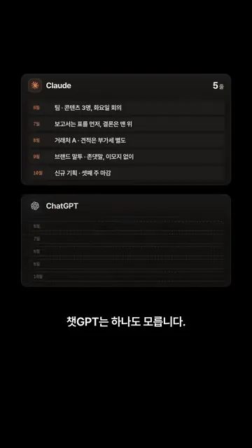
영상이 말하는 문제는 이거예요. 내 기록과 팀 노하우가 계속 남의 서비스 안에만 쌓여요. 그 대안으로 소개하는 세 도구가 위쪽 카드예요. 카드 아래 작은 태그에 Basic Memory는 AGPL(GNU Affero General Public License)-3.0, SilverBullet은 MIT(Massachusetts Institute of Technology) 라이선스가 적혀 있고, 셋 다 무료예요.
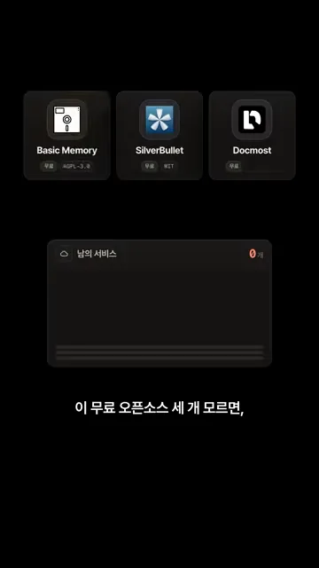
AI의 기억을 내 파일로
첫 번째 Basic Memory는 AI가 기억할 내용을 내 컴퓨터의 마크다운 파일로 저장해요. 아래 화면은 ~/basic-memory/team 폴더의 보고서 규칙.md예요. 맨 위 프런트매터에 제목과 종류가 있어요. 그 아래 ## Observations에는 [rule], [decision] 같은 꼬리표를 단 사실이, ## Relations에는 [[주간 회의]]처럼 다른 메모로 가는 링크가 적혀요.
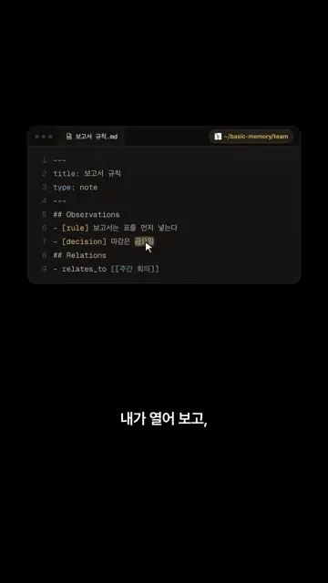
이 폴더는 MCP로 여러 AI에 연결돼요. 화면에서는 Claude, Codex, Cursor가 MCP 선으로 가운데 Basic Memory에 붙어 있어요. 셋이 같은 메모 묶음(보고서 규칙, 거래처 A, 주간 회의)을 함께 읽고 써요. 다음 날 "어제 하던 거 이어서 하자"라고 하면 관련 메모를 찾아 바로 이어 가요.

SilverBullet, 메모끼리 잇는 개인 위키
두 번째 SilverBullet은 내 메모끼리 서로 이어 주는 개인 위키예요. 쓰는 법은 단순해요. 대괄호 두 개 안에 메모 이름을 쓰면 바로 링크가 걸려요. 아래 화면은 '회의록 10-02'에 '견적은 거래처 A 기준으로 다시 보낸다'를 쓰는 장면이에요. '거래처 A'에 밑줄이 생겼어요.
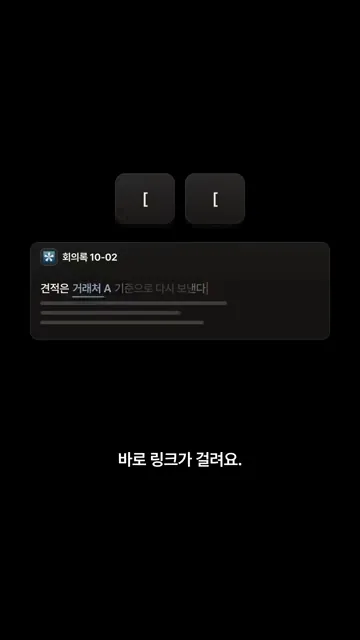
링크를 받은 쪽에서 더 쓸모가 생겨요. '거래처 A' 페이지를 열면 맨 아래에 이 페이지를 가리킨 메모가 모여요. 회의록 10-02, 견적 정리('거래처 A는 부가세 별도'), 주간 리뷰('거래처 A 회신 대기')가 해당 줄과 함께 보여요. 이렇게 거꾸로 모아 보여 주는 걸 백링크라고 해요.
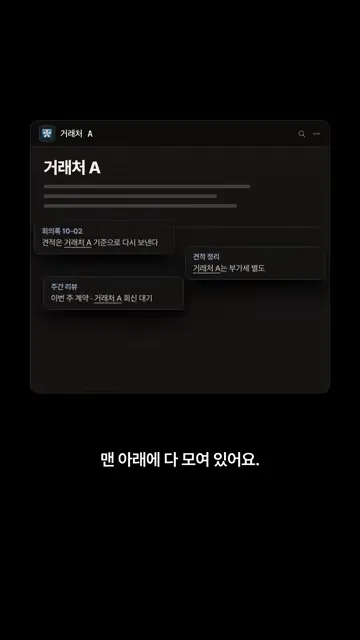
할 일도 같은 방식으로 모아요. 회의록, 견적 정리, 주간 리뷰에 체크박스 할 일을 하나씩 적어 두고, 다른 페이지에 쿼리 한 줄을 넣어요. 화면의 쿼리는 index.tasks()에서 끝나지 않은(not t.done) 할 일만 골라요. 그러면 '할 일' 칸에 세 개가 모이고, 오른쪽 꼬리표로 어느 메모에서 왔는지 보여요.
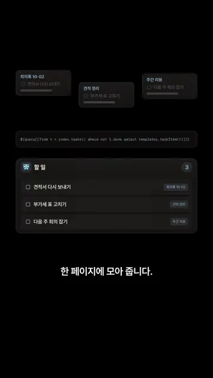
Docmost, 우리 서버에 까는 팀 위키
세 번째 Docmost는 노션 대신 우리 서버에 직접 까는 팀 위키예요. 아래 화면은 '우리 서버' 상자 안에 Docmost가 들어가는 모습이에요. 맨 아래 터미널에는 docker compose up -d 한 줄이 있어요. 셀프 호스팅이라 문서가 회사 밖으로 나가지 않아요.
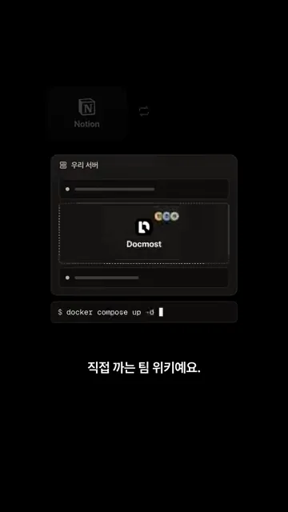
여러 명이 한 문서를 동시에 고쳐도 서로 내용을 덮어쓰지 않아요. 화면은 마케팅팀 스페이스의 '4분기 캠페인' 문서예요. 오른쪽 위에 동그란 아바타 세 개가 있어요. 세 사람이 목표, 채널, 일정 줄 끝에 각자 덧붙인 내용(랜딩 문구 교체, 숏폼 주 3회, 리허설 10/30)이 모두 체크 표시와 함께 살아 있어요.
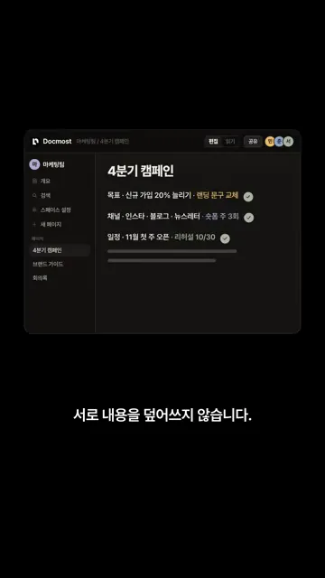
누가 실수로 내용을 지워도 되돌릴 수 있어요. 아래쪽 '페이지 기록'에 14:26, 14:31, 14:36, 14:41 네 시점이 찍혀 있어요. 14:36을 고르고 '복원'을 누르면 위 문서에 지워졌던 세 줄이 돌아오고 '복원 완료'가 떠요.
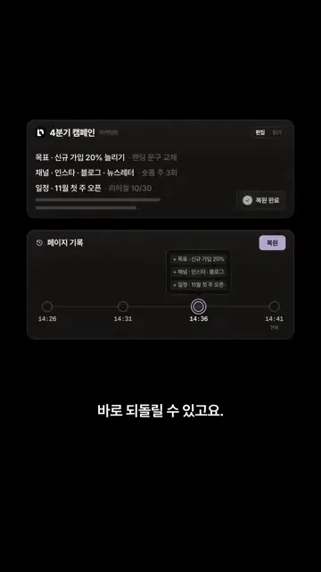
옮겨 오는 것도 어렵지 않아요. 위쪽은 노션에서 내보낸 Notion export.zip을 '페이지 가져오기'로 넣어 회사 위키(브랜드 가이드, 고객 대응, 환불 기준)가 그대로 생기는 장면이에요. 아래쪽은 스페이스 설정의 사용자 권한이에요. 마케팅팀은 편집할 수 있음, 영업팀은 전체 권한, 외부 파트너는 볼 수 있음으로 나뉘어 있어요.
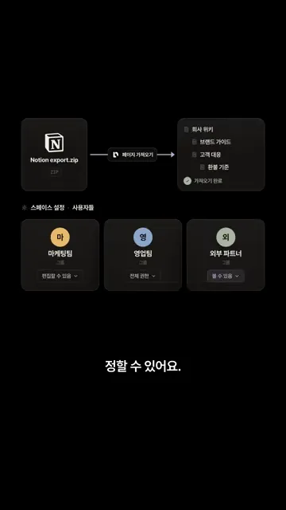
셋을 같이 쓰면 생기는 문제
마지막으로 영상은 주의할 점을 하나 짚어요. 셋을 기준 없이 쓰면 같은 내용이 세 군데 생겨요. 화면은 '거래처 A 계약 조건'이 세 도구에 하나씩 있는 모습이에요. 납기가 Basic Memory에는 금요일, SilverBullet에는 목요일, Docmost에는 다음 주 월요일로 적혀 있어요. 수정 날짜도 10월 2일, 9일, 7일로 제각각이에요.
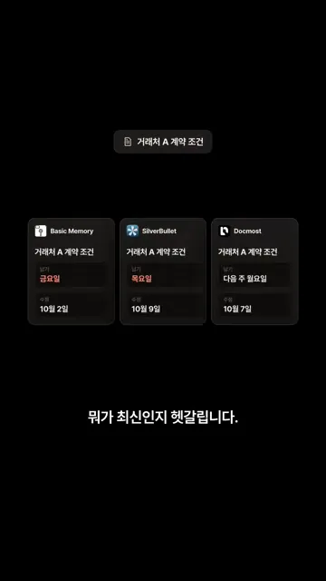
그래서 세 도구를 층으로 나눠 생각해요. 맨 위는 AI 기억(Basic Memory), 가운데는 개인 위키(SilverBullet), 맨 아래는 팀 위키(Docmost)예요. 개인 위키에 있는 메모가 팀 위키로 내려가는 길목에 '기준?' 자물쇠가 걸려 있어요. 무엇을 어디에 두고, 언제 팀 위키로 올릴지가 핵심이라는 뜻이에요.
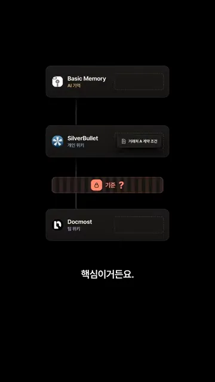
| 도구 | 화면 속 자리 | 기록이 쌓이는 곳 | 영상이 보여 준 기능 |
|---|---|---|---|
| Basic Memory | AI 기억 | 내 컴퓨터의 마크다운 파일 | AI 기억 저장, 직접 수정, 여러 AI가 공유 |
| SilverBullet | 개인 위키 | 내 메모 공간 | 대괄호 링크, 맨 아래 모이는 연결 메모, 할 일 모으기 |
| Docmost | 팀 위키 | 우리 서버 | 동시 편집, 버전 되돌리기, 노션 가져오기, 팀별 권한 |
영상 안에서는 그 기준 자체를 다루지 않아요.